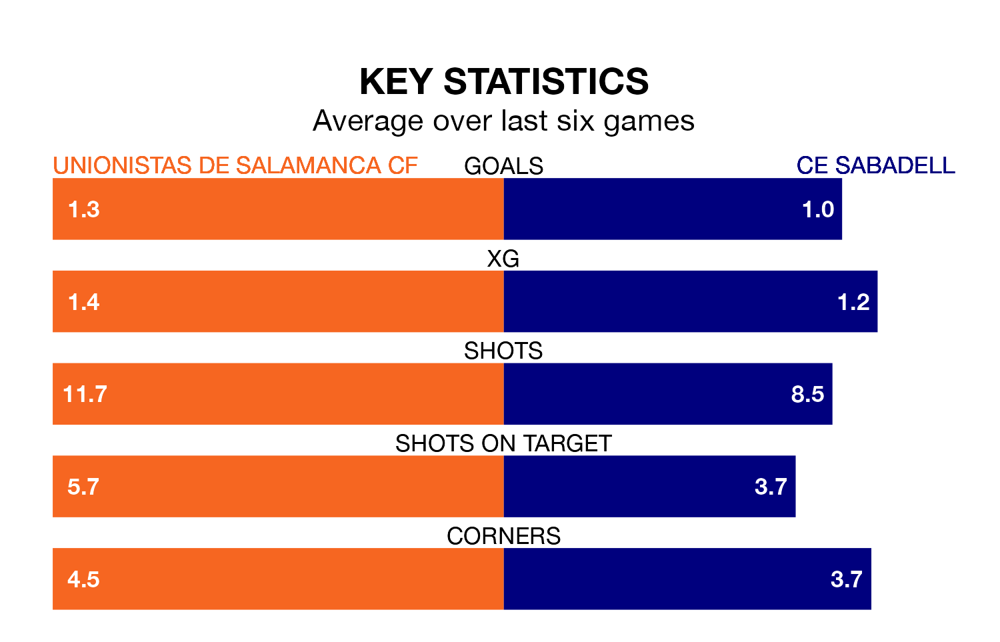

Unionistas de Salamanca CF host CE Sabadell on Saturday at Pistas del Helmántico in Primera Division RFEF Group 1.
In their last league match, on Sunday, Unionistas de Salamanca lost to Real Unión 3-1 away, with their goal scored by Borislav Ivaylov Stankov.
CE Sabadell won, 2-1 at home against UE Cornellà on April 20, with Marc Doménech Costa and Vladyslav Koptoun on the scoresheet.
With 29 goals in 33 games so far this season, Unionistas de Salamanca are scoring at below the league average rate with 0.9 goals per game. But they are conceding fewer than average too, letting in 28 goals at a rate of 0.8 per game.
CE Sabadell are also below average scorers, with 1.0 goal per game, compared to a league average of 1.1. They have conceded 1.4 goals per game.
The visitors' David Astals Barrera is among the league's most creative players, racking up six assists in 25 appearances so far this season, and holding second spot in Primera Division RFEF Group 1's assist charts.
For the home team, Jon Rojo Sagarna and Álvaro Gómez Martín have set up the most goals, having laid on two assists apiece to date.
CE Sabadell are 15th in the table after 33 games, of which they have won 10 and drawn seven, earning 37 points.
Unionistas de Salamanca are seven places ahead of CE Sabadell in eighth, with 11 wins and 12 draws putting them on 45 points.
Unionistas de Salamanca are in mixed form in Primera Division RFEF Group 1, with three wins and three losses from their last six games.
With two wins and two draws over that period, the away side's form is slightly worse – they have taken eight points from 18, compared to the hosts' nine.
Updated: 07:59 (UTC), 26/04/24